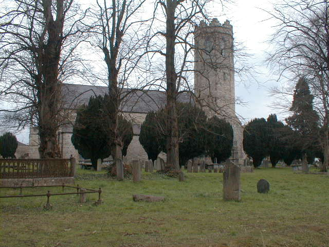
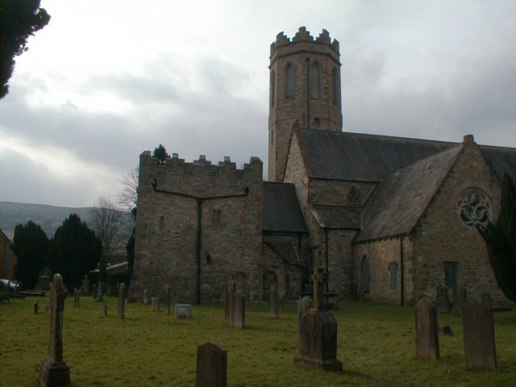

Old St Marys Church
It is uncertain when the church was built, but it is believed to have been in 1204 by William de Burgo. It was in use, however, before 1228, as the first reference to it (which appears to be the first reference to any building in Clonmel) occurs in a letter dated August 1228. In the late 14th Century, the town was almost continuously besied by the Irish, leading James, Earl of Ormonde to exclaim in 1385 that "the citizens of the town had been unable to attend divine service in their parish church in the accusyomed manner due to the poor state of repair of the building".

In response to the need for greater safety, a fortified church was built on the site in the late fourteenth/early fifteenth century. A sketch by Daniel Grose in the late eighteenth century provides an excellent impression of the the fifteenth century structure prior to extension renovations in 1805 and its total rebuilding in 1857. Few traces of the original 13th century building remain overground. Alterations were made in the 14th, 15th and 16th centuries.
